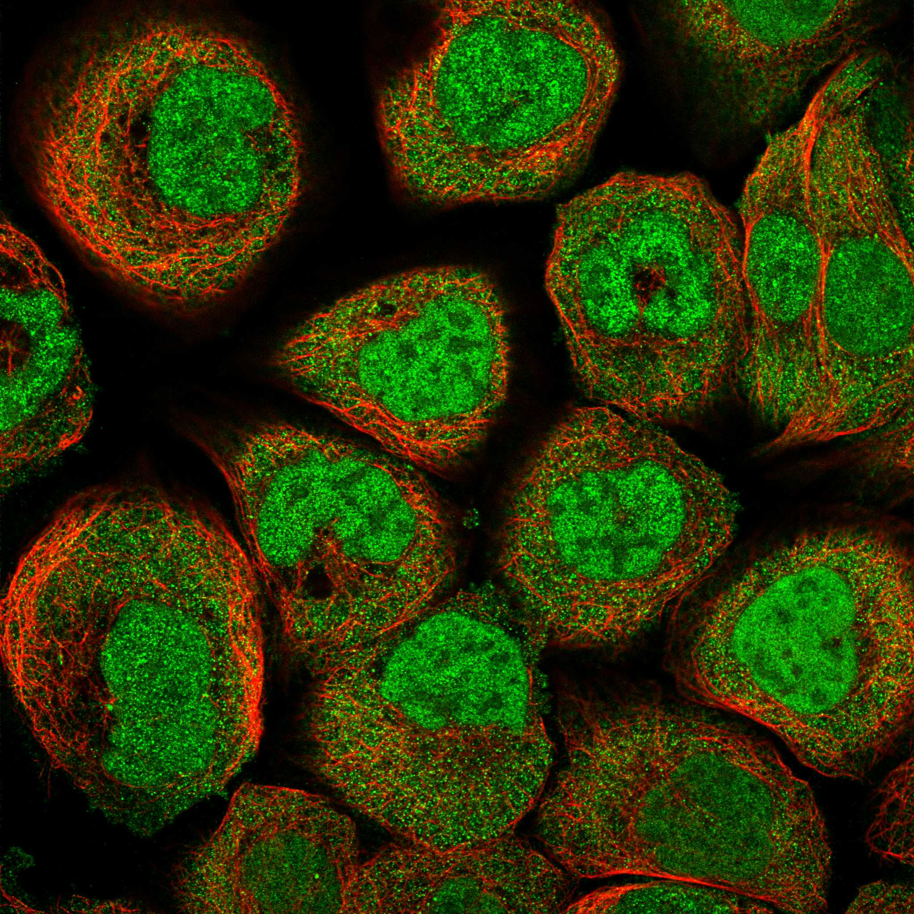
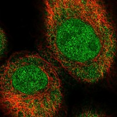

type: protein-evaluation gene: "C16orf46" date: 2026-06-01 tags: [protein-scout, nucleoplasm, evaluation] status: scored ---
C16orf46 核蛋白评估报告
1. 基本信息
| 项目 | 内容 |
|---|---|
| 基因名 | C16orf46 |
| 蛋白全名 | Uncharacterized protein C16orf46 |
| 蛋白大小 | 395 aa / ~44 kDa |
| UniProt ID | Q6P387 |
2. 评分总览
| 维度 | 得分 | 权重 | 加权 | 证据摘要 |
|---|---|---|---|---|
| 核定位特异性 | 6/10 | ×4 | 24.0 | GO nucleoplasm IDA:HPA + cytosol IDA:HPA |
| 蛋白大小 | 7/10 | ×1 | 7.0 | 395 aa |
| 研究新颖性 | 10/10 | ×5 | 50.0 | PubMed strict=1 |
| 三维结构 | 4/10 | ×3 | 12.0 | pLDDT 49.8; 62.5% <50 |
| 调控结构域 | 3/10 | ×2 | 6.0 | 无已知 domain |
| PPI 网络 | 3/10 | ×3 | 9.0 | STRING 弱; IntAct 3 (含 SNRPB 核蛋白) |
| 加权总分 | 108/180** | |||
| 互证加分 | +1.0 | GO IDA:HPA | ||
| 归一化总分 (÷1.83) | 59.0/100** |
PubMed strict: 1
3. 核定位证据
| 来源 | 定位 | 可信度 |
|---|---|---|
| UniProt | 无 Subcellular Location | — |
| GO-CC | cytosol IDA:HPA; nucleoplasm IDA:HPA | Direct assay |
| HPA IF | Nucleoplasm (main) | localization available |
HPA IF 数据: HPA subcellular localization available. Antibody HPA041897, cell line U-2 OS. Full red_green IF image acquired (611 KB).

HPA IF 状态: IF full acquired — HPA IF 原图 (red_green, 611 KB) 已成功获取并嵌入。HPA 数据库包含 16 张 red_green IF 图像（多细胞系/抗体），确认核质染色。GO nucleoplasm IDA:HPA 的原始实验证据来源于此。
4. 研究现状
| 指标 | 数值 |
|---|---|
| PubMed strict | 1 |
| PubMed broad | 1 |
关键文献: PMID:29678742 (Life Sci, 2018) — C16orf46 作为肝癌预后六基因签名组成基因。无独立功能研究。
5. 三维结构
| 指标 | 数值 |
|---|---|
| mean pLDDT | 49.8 |
| pLDDT >90 | 0.0% |
| pLDDT 70-90 | 1.7% |
| pLDDT 50-70 | 35.8% |
| pLDDT <50 | 62.5% |
| PDB | 无 |
PAE: PAE 图像已获取。pLDDT 49.8 — 蛋白高度无序 (62.5% <50)。无已知 InterPro/Pfam domain。
6. PPI 网络
| Partner | 来源 | 方法/Score | 功能 |
|---|---|---|---|
| SNRPB | IntAct | cross-linking (PMID:30021884) | Spliceosomal Sm protein B, nuclear speckle |
| FAT3 | IntAct | coIP (PMID:28514442) | Atypical cadherin |
| ANKRA2 | IntAct | phage display (PMID:35044719) | Ankyrin repeat |
| GCSH | STRING | 0.539 (textmining) | Glycine cleavage |
| ENAM | STRING | 0.487 (textmining) | Enamelin |
UniProt curated interactions: 0。SNRPB (核蛋白, splicing) 是唯一的核功能相关 partner。
7. 总体评价
极新颖核蛋白 (PubMed strict=1)。HPA IF 原图确认核质定位。AlphaFold 高度无序 (pLDDT 49.8)。低置信度 nucleoplasm 候选 (59.6/100)。
8. 数据来源
- UniProt: https://www.uniprot.org/uniprotkb/Q6P387
- AlphaFold: https://alphafold.ebi.ac.uk/entry/Q6P387
- PubMed: https://pubmed.ncbi.nlm.nih.gov/?term=C16orf46
- HPA: https://www.proteinatlas.org/search/C16orf46

PPI 网络
| Partner | Source | Score/Evidence |
|---|---|---|
| GCSH | STRING | 0.539 |
| ENAM | STRING | 0.487 |
| TTC26 | STRING | 0.481 |
| IL22RA1 | STRING | 0.473 |
| CCDC183 | STRING | 0.452 |
| FAT3 | IntAct | psi-mi:"MI:0007"(anti tag coim |
| SNRPB | IntAct | psi-mi:"MI:0030"(cross-linking |
| ANKRA2 | IntAct | psi-mi:"MI:0084"(phage display |
HPA IF 图像已本地嵌入。
PAE 图像说明: AlphaFold PAE 图像已重新获取并嵌入（见下方 PAE 图像修正块）；结构判断仍结合 pLDDT 与 PAE 综合判断。
<!-- AF_PAE_REPAIR_START --> PAE 图像修正（2026-06-05）: AlphaFold 提供 predicted aligned error 图像；此前“PAE 图像暂无数据”的表述为未获取/未嵌入导致。